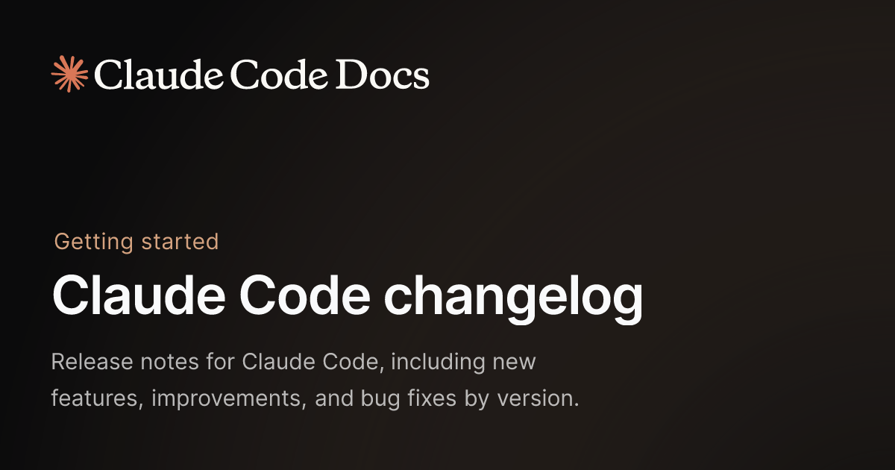
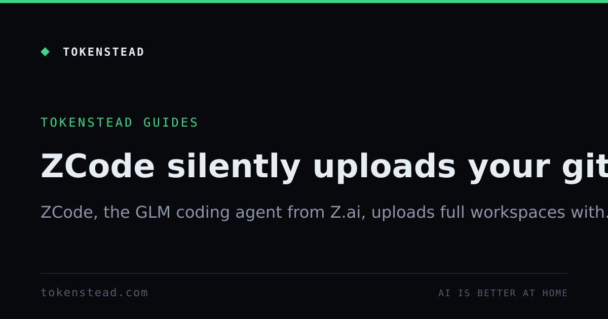
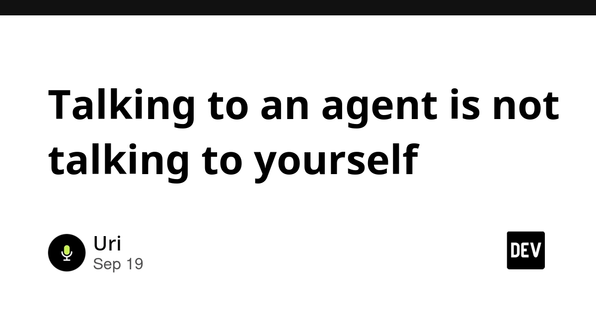

🔥 Top 3 (must read)
Claude Code now reads AGENTS.md if there is no CLAUDE.md
(HN discussion, Simon Willison's note) Starting in Claude Code 2.1.277, if a folder has no CLAUDE.md, Claude Code looks for and uses AGENTS.md instead. The feature is built as a "mod", which Anthropic says is the upcoming way to customize the Claude Code harness, and custom project-instruction mods will be possible too. Why it matters: your repos can keep one instruction file that works for Claude Code, Copilot, and other agents. The mods system also hints at how teams will customize the tool in the future.

ZCode, the GLM coding agent, silently uploads your Git history
(HN discussion) A write-up reports that the ZCode coding agent sends your Git history to its servers without clearly telling you. The HN thread has 258 points and is a good place to see the details and reactions. Why it matters: as an EM, you decide which coding agents your team may install. This is a strong reason to check what each tool sends over the network before you approve it.

Why AI Coding Agents Crash at 3 AM: The Happy-Path Mirage & The Forced Continuity Defect
The article argues that agent-written code often works on a quiet staging server but fails under real production conditions, like bad data or slow networks. It names two patterns: the "happy-path mirage" and the "forced continuity defect". Why it matters: it gives you concrete failure patterns to look for in code review and to cover in your test strategy when your team ships agent-written code.
🤖 AI for developers
Should you read the code, is RAG dead, and did Skills kill MCP?
GitHub Podcast episode on current AI hot takes. Useful for how teams think about reviewing agent output, and Skills vs MCP.
G
How to stop a leaked AI agent key from still working with Kinde access tokens
Argues agent credentials should expire in minutes, not months, because agents do not mind re-authenticating. Uses short-lived access tokens as the fix.
Talking to an agent is not talking to yourself
When you dictate to a coding agent, your words become the instruction with no editing step. The post lists what loose speech drops and how to speak more precisely.

🎯 For me
AGENTS.md support in Claude Code is the direct hit. If any of your repos are used with more than one agent, you can now keep a single AGENTS.md instead of duplicating rules into CLAUDE.md.
ZCode's silent upload is an EM item. It is a good reason to add a "what does this tool send home" check to your team's process for approving coding agents.
The 3 AM article maps well to your automation-testing interest. Its two failure patterns are good candidates for E2E and chaos-style test cases on agent-written code.
💡 App ideas & indie builds
Rickub – The Smartest Git in the Universe
(HN discussion) — A Show HN project that pitches itself as a smarter Git. The problem it targets is that Git's day-to-day workflow is still hard for many developers. The 20-comment thread is worth a look for how people react to bold claims about developer tools, and for the gap between "Git is hard" and what people will actually switch to.
R
🎓 Try this
Update Claude Code to 2.1.277 or newer, then pick one repo and move its project rules into an AGENTS.md file with no CLAUDE.md next to it. Check that Claude Code still follows the rules. Details in the Claude Code changelog.